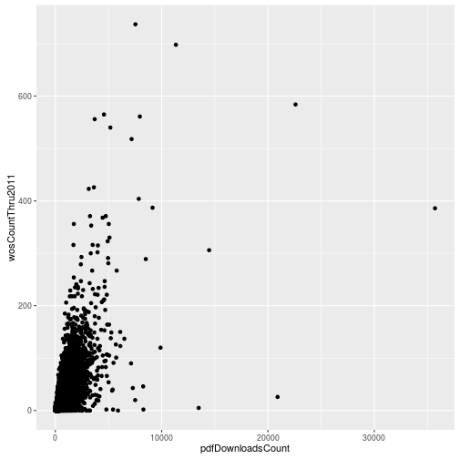
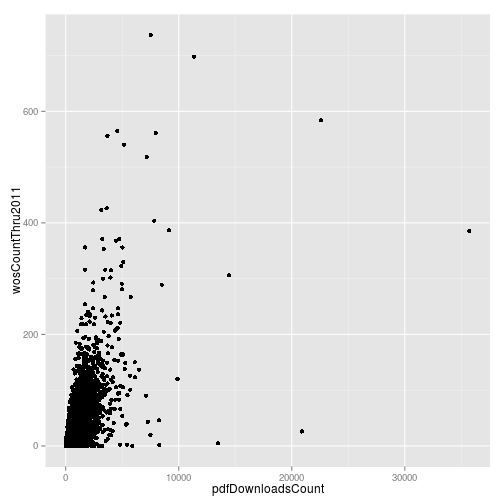
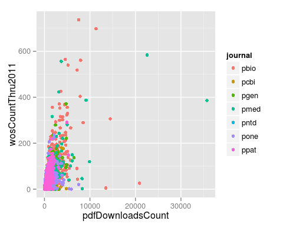
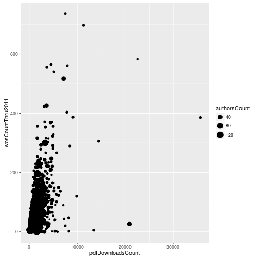
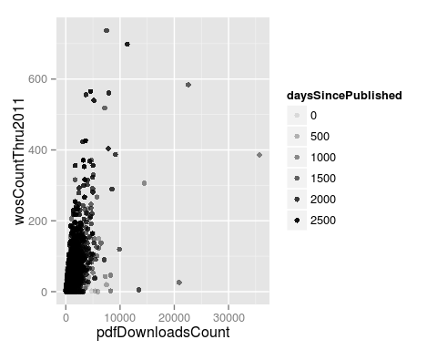
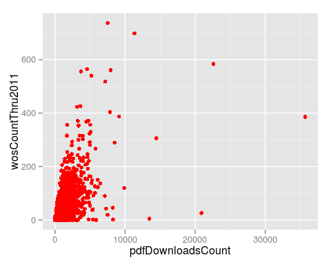
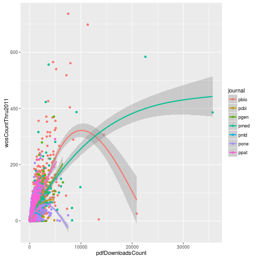

Intermediate programming with R
Mapping data to plot aesthetics
Learning Objectives
- Map columns of data frame to plot aesthetics using
aes - Add multiple layers to a plot
- An aesthetic should be defined within
aesonly when it is data-dependent - Layers inherit the aesthetics defined in the original
ggplotfunction call
Plotting with ggplot2 is quite different from the base R plotting functions. While there is a decent learning curve, once you become comfortable with the basics you can easily make complicated visualizations.
A first plot
We start by loading the package.
library("ggplot2")Loading required package: methods
In ggplot2, we map columns of a data frame to features of a plot, which are called aesthetics. The base function is ggplot, which we supply the data frame and also the mappings. We map the number of PDF downloads to the x variable and the number of 2011 citations to the y variable.
p <- ggplot(data = research, mapping = aes(x = pdfDownloadsCount, y = wosCountThru2011))We plot by executing the plot object.
pError: No layers in plot
However we get an error stating there are no layers in the plot. In addition to mapping aesthetics, this is the other big concept in ggplot2. We can build a plot up in layers. To make a simple scatter plot, we add the layer geom_point to the base we had created.
p + geom_point()
Using the plus sign + we can combine multiple ggplot2 commands. We did not need to pass any arguments to geom_point because it inherited the aesthetic mappings we set in the original ggplot command.
One option is to build up the plot in pieces by reassigning the result to p.
p <- p + geom_point()But so that it is clear what commands are creating each plot, we’ll assign p in one long command. To aid readability, each new command will go on a new line. Also we’ll remove the names of the arguments to ggplot2 so that it is shorter.
p <- ggplot(research, aes(x = pdfDownloadsCount, y = wosCountThru2011)) +
geom_point()
p
Exploring the different aesthetics
So far this isn’t that interesting because the aesthetics x and y are so straightforward. Let’s map the column journal to some of the different aesthetics to see how powerful this is. We’ll define these new aesthetics within the geom_point layer. We’ll explore the significance of this later.
p <- ggplot(research, aes(x = pdfDownloadsCount, y = wosCountThru2011)) +
geom_point(aes(color = journal))
p
Each point was colored according the journal the article was published in. Furthermore, a legend was automatically added to the plot.
Another aesthetic is the size of the points. Let’s assign the size of the point to the number of authors for the article.
p <- ggplot(research, aes(x = pdfDownloadsCount, y = wosCountThru2011)) +
geom_point(aes(size = authorsCount))
p
The aesthetic alpha controls the transparency of the points. Let’s map alpha to the number of days since publication to emphasize articles that have had more time to accrue citations.
p <- ggplot(research, aes(x = pdfDownloadsCount, y = wosCountThru2011)) +
geom_point(aes(alpha = daysSincePublished))
p
Up to this point it may have seemed superfluous to have the aes function call within the other functions. However, this is critical for ggplot2 to know we are mapping the aesthetic to a column of the data frame. If the aesthetic is defined outside of aes, then it is applied uniformly to all the data. For example, to make all the points the color red we assign the aesthetic without aes.
p <- ggplot(research, aes(x = pdfDownloadsCount, y = wosCountThru2011)) +
geom_point(color = "red")
p
Adding another layer
The plots we’ve made have only had one layer. Let’s return to coloring the points by the journal and add a new layer, geom_smooth.
p <- ggplot(research, aes(x = pdfDownloadsCount, y = wosCountThru2011)) +
geom_point(aes(color = journal)) +
geom_smooth()
pgeom_smooth: method="auto" and size of largest group is >=1000, so using gam with formula: y ~ s(x, bs = "cs"). Use 'method = x' to change the smoothing method.

geom_smooth fits a loess curve to the data along with the 95% confidence interval.
Now let’s change the aesthetics such that mapping the column journal to the color of the points is done in the base ggplot function call.
p <- ggplot(research, aes(x = pdfDownloadsCount, y = wosCountThru2011,
color = journal)) +
geom_point() +
geom_smooth()
pgeom_smooth: method="auto" and size of largest group is >=1000, so using gam with formula: y ~ s(x, bs = "cs"). Use 'method = x' to change the smoothing method.

There are now 7 loess curves, one per journal. Because the aesthetic color was defined in the base ggplot call, geom_smooth inherited this aesthetic mapping and correspondingly split into 7 groups.
Challenge
Citations versus days since publication
Create a scatter plot with daysSincePublished mapped to the x-axis and wosCountThru2011 mapped to the y-axis. Include a loess fit of the data. Set the transparency level (alpha) of the points to 0.5 and color the points according to the journal where the article was published. Make the loess curve red.